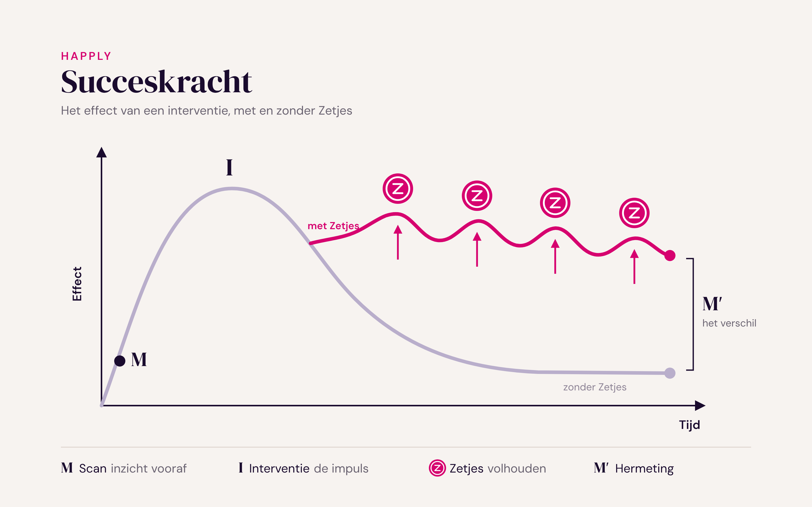

Zo vergroot je de succeskracht van je training of interventie, zonder iets aan de inhoud te veranderen.
Niet omdat de training slecht was, maar omdat nieuw gedrag weken herhaling nodig heeft. En in die weken staat de deelnemer er alleen voor.
Opdrachtgevers weten dat. Ze vragen steeds vaker niet of de training goed was, maar of mensen het geleerde ook toepassen. In het model van Kirkpatrick is dat niveau 3, gedrag: het niveau waar opdrachtgevers om vragen en dat bijna geen trainer kan laten zien.
Vier krachten werken na elke training tegen je in. Geen ervan los je op met meer lesstof.
Wat we leren, zakt snel weg als het niet terugkomt. Ebbinghaus beschreef die vergeetcurve al in 1885; Murre en Dros (2015) lieten zien dat ze nog steeds klopt.
Gemiddeld 66 dagen voordat nieuw gedrag vanzelf gaat, met uitschieters van 18 tot 254 dagen (Lally e.a., 2010). Een training duurt een dag.
Steun van leidinggevende en collega's hangt sterk samen met toepassing van het geleerde, blijkt uit 89 studies (Blume e.a., 2010). Juist die omgeving valt buiten de training.
Twijfel of je het wel kunt, de neiging om bij het oude te blijven, en verzet tegen verandering die van buiten komt. Ze komen pas boven als het in de praktijk lastig wordt.

Waar staat iemand in zien, sturen en doen? Potentieel en valkuilen vooraf in beeld, voor de deelnemer en als teambeeld voor jou.
Kennis, vaardigheden en de wil om te veranderen. De inhoud blijft van jou.
Kleine zetjes die weerstand overwinnen, zodat nieuw gedrag beklijft. Met wetenschappelijk bewezen gedragstechnieken, zoals het als-dan-plan.
Het verschil zichtbaar, voor deelnemer en opdrachtgever.
Als-dan-plannen: wie vooraf vastlegt wanneer en hoe hij iets doet, voert het vaker uit. Gollwitzer en Sheeran (2006) vonden dat effect in 94 studies.
Je verkoopt geen training meer, maar een training die blijft werken.
Bijna geen trainer of coach kan laten zien dat deelnemers het geleerde toepassen. Jij wel.
Na 30 dagen een rapport voor je opdrachtgever. Je sterkste argument voor de volgende opdracht.
De hermeting laat zien waar het team nog ruimte heeft. De aanleiding voor een vervolgsessie, door jou.
Je koopt per deelnemer in en bepaalt zelf je prijs. Uitnodigen, Zetjes en hermeting lopen vanzelf.
Je verandert niets aan de inhoud. Het werkt bij een eendaagse training, een traject, coaching en een leiderschapsprogramma, ook als je een handvol trainingen per jaar geeft.
Je betaalt per deelnemer. De prijs hangt af van je programma en aantallen; die spreken we samen af. Bij zorg en vitaliteit rekenen we per activering.
Nee. Wie het teambeeld zelf met zijn klant wil bespreken, kan Gecertificeerde Practitioner worden. Aanbevolen, niet verplicht.
Een paar minuten in de training om het als-dan-plan te laten maken. De rest loopt vanzelf.
De scan en Zetjes werken per deelnemer. Het teambeeld verschijnt vanaf vijf deelnemers, zodat niemand herleidbaar is.
Een gesprek van een halfuur over jouw training en hoe de vier stappen erin passen.
Blume, B.D., Ford, J.K., Baldwin, T.T. en Huang, J.L. (2010). Transfer of training: a meta-analytic review. Journal of Management, 36(4), 1065-1105.
Gollwitzer, P.M. en Sheeran, P. (2006). Implementation intentions and goal achievement: a meta-analysis of effects and processes. Advances in Experimental Social Psychology, 38, 69-119.
Lally, P., van Jaarsveld, C.H.M., Potts, H.W.W. en Wardle, J. (2010). How are habits formed: modelling habit formation in the real world. European Journal of Social Psychology, 40(6), 998-1009.
Murre, J.M.J. en Dros, J. (2015). Replication and analysis of Ebbinghaus' forgetting curve. PLOS ONE, 10(7), e0120644.